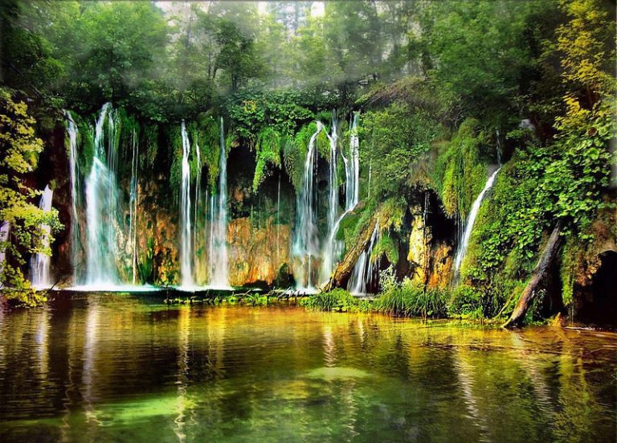

Cusuco
El Parque Nacional Cusuco está ubicado en la Sierra de Omoa, cerca de San Pedro Sula. Es famoso mundialmente entre científicos por su altísima biodiversidad de anfibios y especies endémicas que no se encuentran en ningún otro lugar del mundo.
Su bosque nublado, frecuentemente envuelto en niebla, es hogar de helechos gigantes y una gran variedad de escarabajos gema de colores brillantes.

Bosque Nublado del Cusuco
Un Refugio de Niebla y Biodiversidad
| • | Ubicación: Sierra de Omoa, Cortés / Santa Bárbara |
| • | Ecosistema: Bosque Nublado de Altura |
| • | Especies Clave: Escarabajos Gema, Salamandras Endémicas, Quetzal, Jaguar |
| • | Categoría de Conservación: Parque Nacional |
| • | Extensión Territorial: 222.23 km² (Importante zona de investigación científica) |
| • | Altitud Máxima: 2,242 metros sobre el nivel del mar |